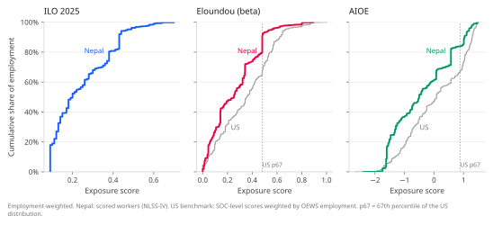
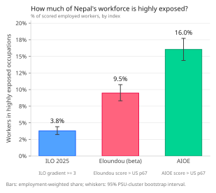
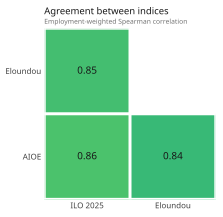
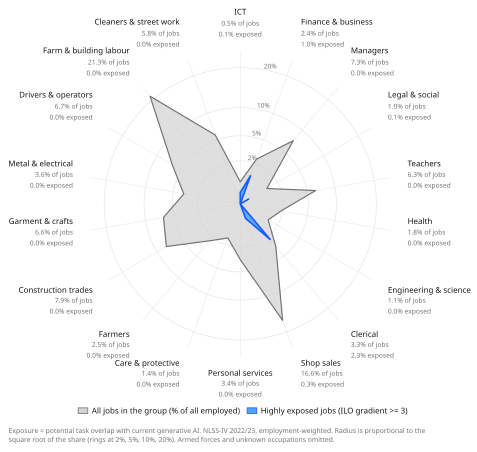
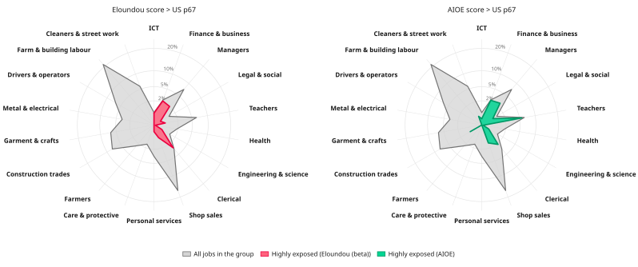
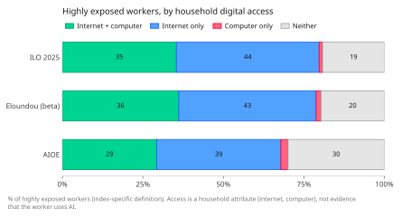
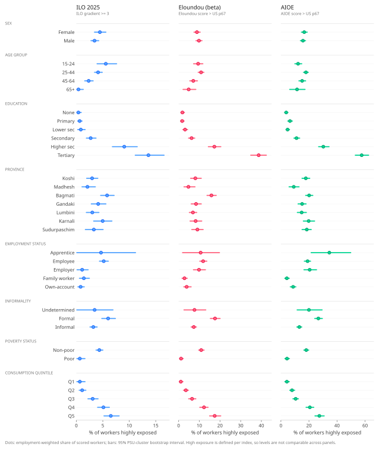
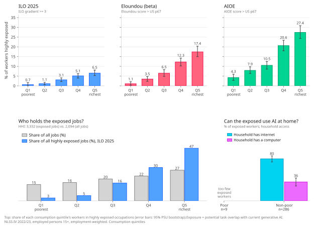
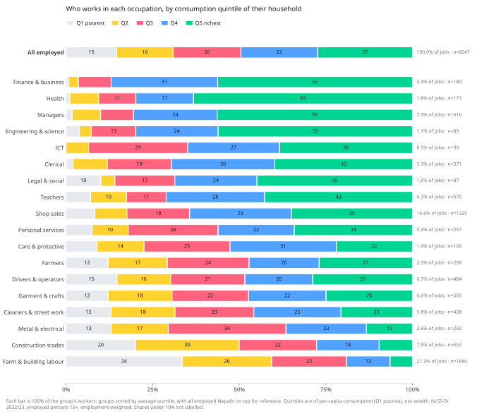
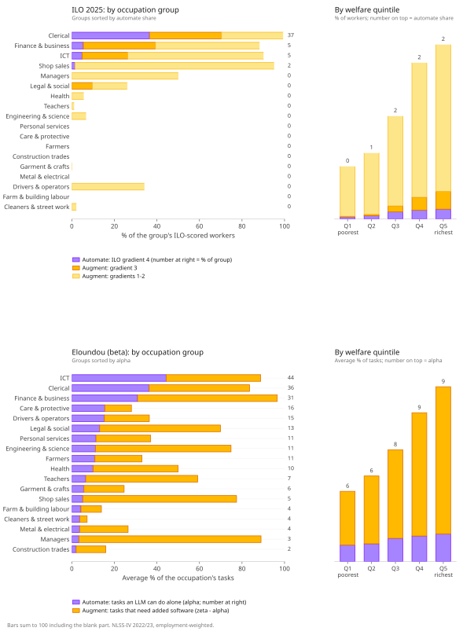

What does AI mean for Nepal?
Mapping AI exposure onto Nepal’s labor force
I am worried about what AI will do to the labor market. I’m training to do knowledge work and I’m not sure I’ll do it better than AI in 2028 (Dario predicts AGI in 2028 and he has largely been right about the timelines). So what does that mean for me and the ~8 million employed people in Nepal? I try to answer this question partly.
To preface, I’m optimistic about AI in the long term—the gains in productivity will likely usher in great prosperity. The short to medium term—the transitory phase—worries me.
This is an attempt to understand how AI might affect the labor market of Nepal. The novelty of this study lies in using the NLSSIV(2022-23) dataset for the analysis. The dataset represents ~6.7 million employed workforce of Nepal. For comparison, NLFS finds ~7.1 million employed at 2017/18. Despite this discrepancy, I think this analysis is a useful starting point to understand the implications of AI on Nepal’s labor force. The interactive chart below plots the employment count by occupation group along with a table of each job that makes up the occupation group.
World Bank has done this exercise of mapping AI exposure onto Nepal’s labor force using the older NLFS(2017) data and Felten et. al (AIOE)as the metric of exposure.
My exercise differs in using the NLSSIV to map AI’s exposure onto Nepal’s labor force using 3 different indices—ILO, Eloundou et. al, Felten et. al. The way we define exposure differs as well. World Bank categorizes occupations as exposed if its score exceeds the median of occupation score distribution. I benchmark exposure against the US workforce—it is employment weighted.
How might we go about measuring how exposed a job is? A useful starting point is thinking of jobs as a bundle of tasks. The more the number of tasks in a job that AI can perform—the more exposed it is. If AI can perform all the tasks of a job and it is profitable to do so—it is automated away.
ILO(Gmyrek et al.) scores each task from 0 to 1 based on how well it could be performed by GenAI with 0 meaning cannot be performed by AI and 1 meaning it could be done entirely by GenAI. It scores each tasks in a given occupation and assigns it an average score along with a measure of variation among the tasks. It then classifies the exposed occupation into 4 gradients.
| Gradient | Meaning | Implications |
|---|---|---|
| 4 | Highest exposure, low task variability | Most tasks have high potential of automation |
| 3 | Significant exposure, high task variability | Potential of all tasks automation is increasing |
| 2 | Moderate exposure, high task variability | Some tasks exposed, others not at all |
| 1 | Low exposure, high task variability | Low potential of automation |
Eloundou et al. label each task into three categories E0, E1 and E2 based on how LLMs affect task completion.
| Label | Task completion |
|---|---|
| E0 | LLMs cannot halve task completion time by half |
| E1 | LLMs can halve task completion time |
| E2 | LLMs + some additional software halves the task completion time |
This allows them to calculate the exposure metrics:
| Statistic | Meaning |
|---|---|
| share of E1 tasks in an occupation | |
| share of E1 tasks + half share of E2 tasks | |
| share of E1 tasks + share of E2 tasks in an occupation |
should be understood as the lower bound of exposure while the upper bound. The score relevant to us is .
Felten et al. measure AI progress in 10 areas(image processing, language modelling, translation, etc.) and map it to 52 human abilities which gives a score for each ability. Then based on how prevalent and important that ability is for a given occupation—it is given a score of exposure.
Occupations carry a NSCO code in NLSSIV which follows the ISCO-08 classification. Using the ILO exposure index is therefore relatively easy. Eloundou et. al use US SOC 2018 while Felten et. al use US SOC 2010 for classification. I perform crosswalks that collapse US SOC 2018 onto US SOC 2010 and then onto ISCO-08.
ILO index has a discrete gradient from 1 to 4 with increasing orders of exposure. I take 3 and 4 to represent high exposure to AI. For the other 2 indices, I classify the occupation as highly exposed to AI if the score exceeds 67th percentile of US occupations, weighted by employment. Why 67th percentile and not median? These thresholds are arbitrary—I take 50th percentile to mean exposed and 67th to mean highly exposed. In a sense, this metric is a structural comparison of Nepal’s labor market to US’s.

This plot suggests that Nepal’s workforce is less exposed to AI than US’s. It also allows us to visualize how jobs are classified as highly exposed. The cutoffs are 0.481 for Eloundou (β) and 0.887 for AIOE. This means that if a job exceeds these threshold scores they are classified as highly exposed.
More concretely:

Across the 3 indices, 4 to 16% of the workforce is highly exposed to AI based on my choice of threshold for highly exposed . Under the ILO framework, gradients 3 and 4(highly exposed according to me) account for about 4% of employment in lower-middle-income countries. World Bank(2025) calculates share of exposed employment to be ~17%(AIOE). These are useful comparisons for my calculations.
The 3 indices disagree on the magnitude of AI exposure but are strongly correlated as shown by the matrix below:

The radar chart below plots each occupational group’s share of total employment, overlayed with the share of jobs classified as highly exposed to AI. The gray outline can be read as the shape of the labor market of Nepal and blue overlay as the shape of the highly exposed jobs.

I also plot the same radar chart for the other 2 indices:

Knowledge work seems to be the most exposed. This makes sense as these are jobs done through interface with a computer. The tasks are often routine and easily codifiable. Clerical jobs are easily codifiable and routine so as expected it is highly exposed.
We should be careful about interpreting what these exposure measures tell us. AI exposure tells us what tasks AI could potentially do. It is not a measure of what jobs will be automated away. A job whose 90% of tasks could be done by AI can still be constrained by the 10%. As AI frees up your time to do the 10% better this could instead translate to higher productivity and consequently higher wages. But this doesn’t entail that jobs will not be lost. If the consumer demand fails to absorb the increase in productivity— jobs will indeed be lost. (Bessen, 2019)
Imagine your job as a policy researcher. Your task bundle might include writing reports, briefs, data analysis, etc. These are routine tasks that AI can drastically reduce completion time of. AI could free up your time to instead do the other tasks it cannot reach—like communicating your research to policy makers better. AI thus makes you more productive at your work and hence increases your wages as your work becomes more valuable. But what if this increase in productivity is not absorbed? What if the cost reduction in producing policy insights doesn’t increase the demand for policy insights? This is a case where we could see layoffs since cost reduction of the output doesn’t increase demand for output.
For a much richer discussion on this read Imas and Shukla(2026).
A very important dimension to this discussion is whether one can even harness the benefits of AI at work in countries like ours. The chart below shows exposed household’s digital access. Across the 3 indices, only 29-36% of the households have access to both internet and a computer which are integral to harnessing AI. This dimension could be better explored with data on AI adoption—unfortunately, it is beyond the scope of this blog.

The NLSS dataset allows us to explore interesting questions. Lets examine how AI exposure differs across various groups:

I find the pattern across consumption quintiles interesting. AI exposure grows along with household consumption and this trend is robust across all indices.

Visually we can see that exposed jobs are concentrated among higher consumption quintiles. Calculating the Herfindahl-Hirschman index can make this concrete. HHI for highly exposed jobs is 3332 vs 2094 for all jobs(higher is more concentrated). Quintiles 4 and 5 account for 77% of highly exposed jobs but only 49% of all jobs.
The chart below suggests that workers in higher consumption quintiles are more likely to hold knowledge intensive jobs. These are occupations that require higher levels of skill and human capital.

What might this imply for the dynamics of inequality? When the people exposed are disproportionately from better-off households?
Let’s focus first on inequality among workers within a country. Wage inequality is the measure of our concern here, not income inequality. Most technological change is said to be skill-biased. In other words, technology increases relative demand for skilled workers. This demand translates to higher wages for the skilled which has historically driven up wage inequality.
This is a case where AI is labor augmenting. It may increase productivity of the exposed thereby raising wages, given that the productivity is absorbed. This would result in higher inequality. However, there is evidence that AI might be unlike past technologies and instead lower wage inequality as it erases experience/skill premium. Read Leigh’s speech “Will AI increase inequality?” for a framework to think about all these different channels.
The other case—where AI is labor automating should be understood as inequality between workers and employers. Workers supply their labor which along with capital from employer produces some output and both earn some income. Income inequality is the measure of our concern here. As AI reduces the labor share we should see an increase in income inequality as income increasingly accrues to capital. This is what motivates the concept of Universal Basic Capital. If AI reduces the labor share to ~0, capital earns all the income and if everyone could have capital, everyone can live off it.
The chart below decomposes exposure into automation and augmentation for reference.

References:
Bessen, J. (2019). Automation and jobs: When technology boosts employment. Economic Policy, 34(100), 589–626. https://doi.org/10.1093/epolic/eiaa001
Central Bureau of Statistics. (2019). Report on the Nepal Labor Force Survey 2017/18. Government of Nepal.
Eloundou, T., Manning, S., Mishkin, P., & Rock, D. (2024). GPTs are GPTs: Labor market impact potential of LLMs. Science, 384(6702), 1306–1308. https://doi.org/10.1126/science.adj0998
Felten, E., Raj, M., & Seamans, R. (2021). Occupational, industry, and geographic exposure to artificial intelligence: A novel dataset and its potential uses. Strategic Management Journal, 42(12), 2195–2217. https://doi.org/10.1002/smj.3286
Gmyrek, P., Berg, J., Kamiński, K., Konopczyński, F., Ładna, A., Nafradi, B., Rosłaniec, K., & Troszyński, M. (2025). Generative AI and jobs: A refined global index of occupational exposure (ILO Working Paper No. 140). International Labor Organization. https://doi.org/10.54394/HETP0387
National Statistics Office. (2024?). National Living Standards Survey IV 2022/23. Government of Nepal.
World Bank. (2025). South Asia development update: Jobs, AI, and trade. World Bank. Report PDF
- Published
- 30 October 2026
- Updated
- 30 October 2026
- Slug
- /blog/ai-exposure-nepal/